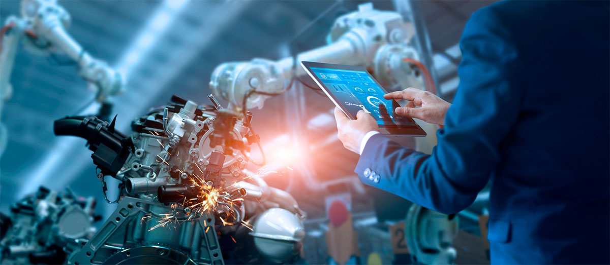

O que é Automação? Quais os tipos? Quais as vantagens e desafios?
Automação é o uso sistemas de controle e de tecnologias para executar tarefas com o mínimo de assistência humana possível. A automação pode ser usada por qualquer setor que envolva tarefas repetitivas, mas é mais frequente nos setores de manufatura, robótica, automobilística e também tecnologia, presente em sistemas de TI e software de decisão de negócios. Tendo a proposta de redução da necessidade de uso contínuo dos sentidos humanos para inspeção e da capacidade mental humana para controle.
O que é automação? Disponível em:
GUIA DA CARREIRA. Ciência da Computação: o que é, o que faz e onde trabalhar. Disponível em:
GUIA DA CARREIRA. Engenharia Mecatrônica: o que faz? Conheça a área. Disponível em:
O Guia Completo para Automação de Processos de Negócios (BPA) – foxfly IT & Marketing. Disponível em:
CRAVO, E. Tipos de automação: descubra quais são eles e veja exemplos. Disponível em: